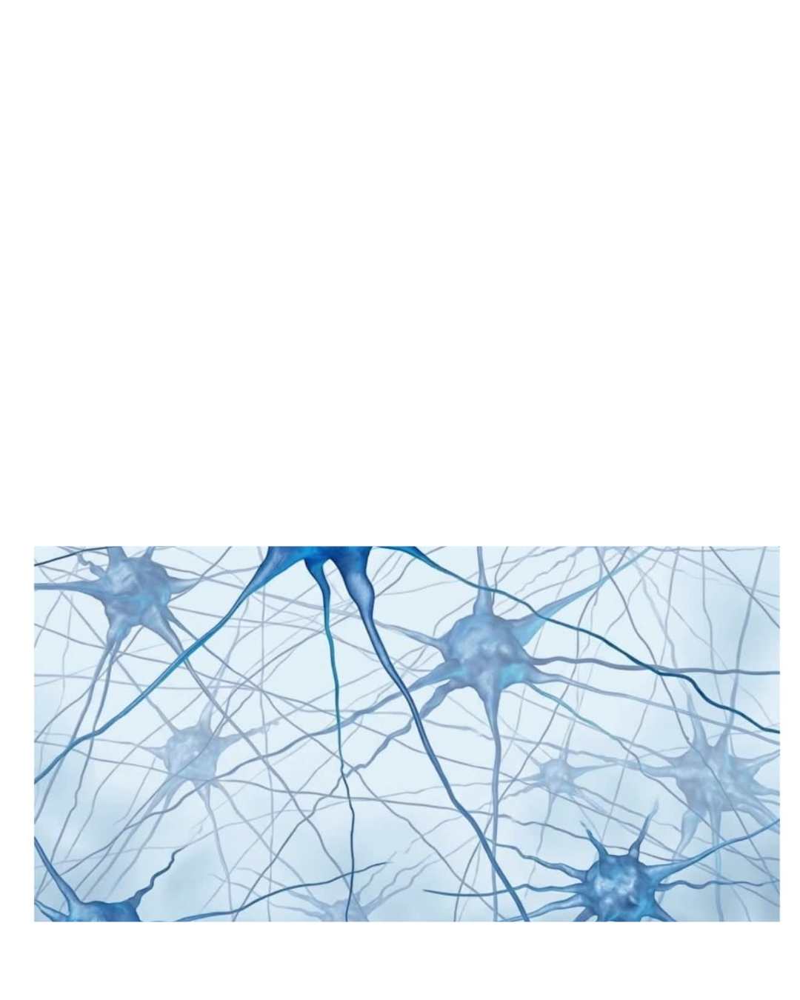

United Nations Human Rights Council
As neurotechnology becomes more advanced, the ability to access information directly from the brain is challenging traditional ideas of privacy. Existing laws were created before this technology was widely available, leaving governments to determine how human rights should apply in a world where a person’s brain activity can become a source of data. As these technologies become more common, the lack of clear international rules has created growing concern over how far their use should be allowed to go. The issue now centers on finding a balance between technological progress and protecting people from potential misuse.
Background Guide